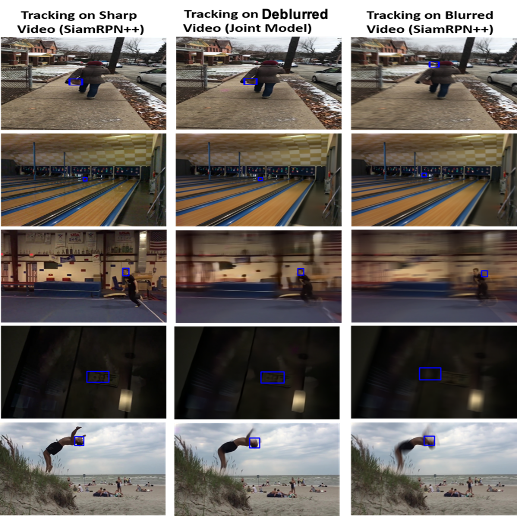

|
Phone: +1 (814) 852 9160 Email: liyupsu@gmail.com CV GitHub LinkedIn LeetCode I am currently a Computer Vision Engineer at Blue River Tech.. I build the job quality module for autonomous tractor and chisel plow for John Deere as part of the Large Ag. Program. I received MS degree from College of IST at the Pennsylvania State University. I worked with Prof. James Z. Wang and Prof. Jia Li. My research interest is the application of Computer Vision and Artificial Intelligence in real-world problems. I received my BS degree in Chemistry and Mathematics at Peking University and my first MS degree at Emory University. |
Research
- My current research work is about the application of advanced computer vision technic in autonomous driving.
- My research work includes explainable image retrieval using positive gradient distance, image understanding, and face expression analysis.
Publications
 |
Surface Defect Detection and Evaluation for Marine Vessels using Multi-Stage Deep Learning Li Yu, Kareem Metwaly, James Z. Wang, and Vishal Monga (IEEE Trans. TITS), IEEE Transactions on Intelligent Transportation Systems [Submitted] [GitHub] |
 |
Spotting Silent Buffer Overflows in Execution Trace through Graph Neural Network Assisted Data Flow Analysis Zhilong Wang, Li Yu, Suhang Wang, Peng Liu (ACM CCS 2021), ACM Conference on Computer and Communications Security [Submitted] [Paper] |
 |
StarGAN-EgVA: Emotion Guided Continuous Affect Synthesis Li Yu, Dolzodmaa Davaasuren, Shivansh Rao, Vikas Kumar ACM Multimedia (ACM MM 2020), Proceedings of the 1st International Workshop on Human-centric Multimedia Analysis [Paper] [GitHub] |
|
Noisy Student Training using Body LanguageDataset Improves Facial Expression Recognition Vikas Kumar, Shivansh Rao, Li Yu 16th European Conference on Computer Vision (ECCV 2020), First International Workshop on Bodily Expressed Emotion Understanding [Paper] |
|
|
Ensemble learning for early identification of students at risk from online learning platforms Li Yu, Tongan Cai 16th International Conference on Data Science (ICDATA 2020) (To appear) Advances in Data Science & Information Engineering, Springer |
Projects
|
Explainable Image Classification Based on Positive Gradient Distance Li Yu, Jia Li |
|
|
3D Room Layout Estimation Vikas Kumar, Shivansh Rao, Li Yu |
|
|  |
End-to-End Object Tracking Under Motion Blur Li Yu, Vikas Kumar, Shivansh Rao, Shrey Nigam [Report] |
|
Augmented Reality Viewer Li Yu, Shivansh Rao, Vikas Kumar, Shrey Nigam [Report] [GitHub] |
|
 |
Artificial Intelligence Assisted Thinprep Cytologic Test (TCT). Li Yu, Xin Xiong, Ying Wang, Pengcheng Ma [GitHub] |
 |
Artificial Intelligence Assisted Tumor Mutation Burden (TMB) prediction. Li Yu, Xin Xiong, Ying Wang, Pengcheng Ma |